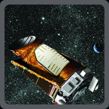
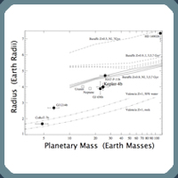

News Clips
Five Kepler target stars that show multiple transiting exoplanet candidates
(June 14, 2010)
Five candidate exoplanetary systems identified by Kepler are discussed.
Kepler-4b: Hot Neptune-Like Planet of a G0 Star Near Main_Sequence Turnoff
(January 4, 2010)
The transiting planet Kepler-4b, one of several planets discovered during the first two observing intervals, is described.